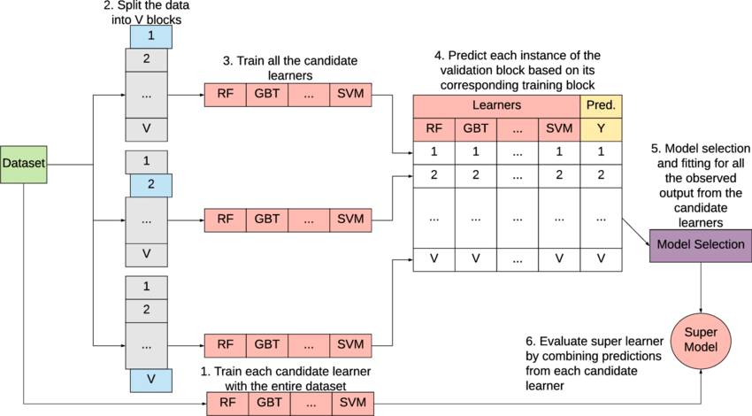
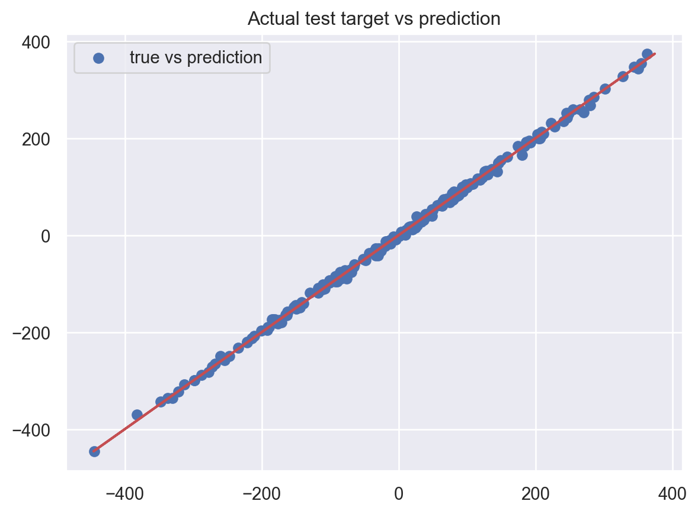
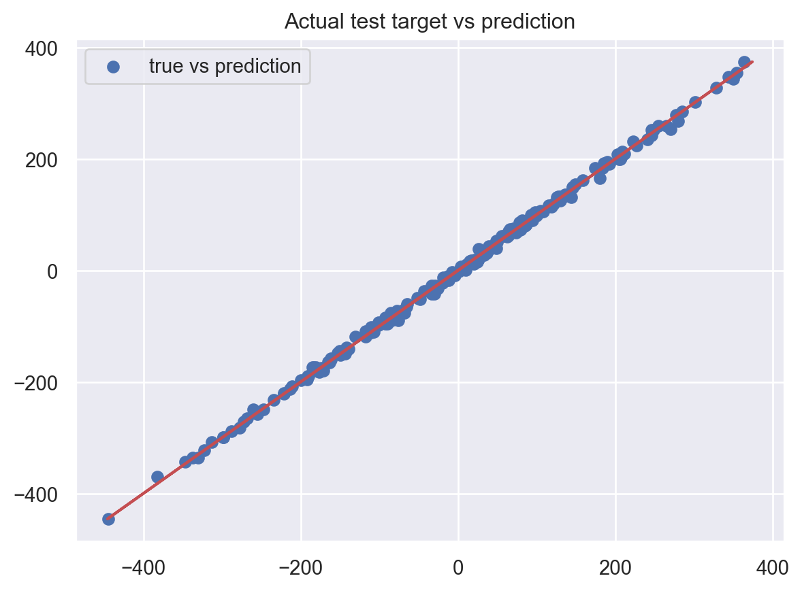
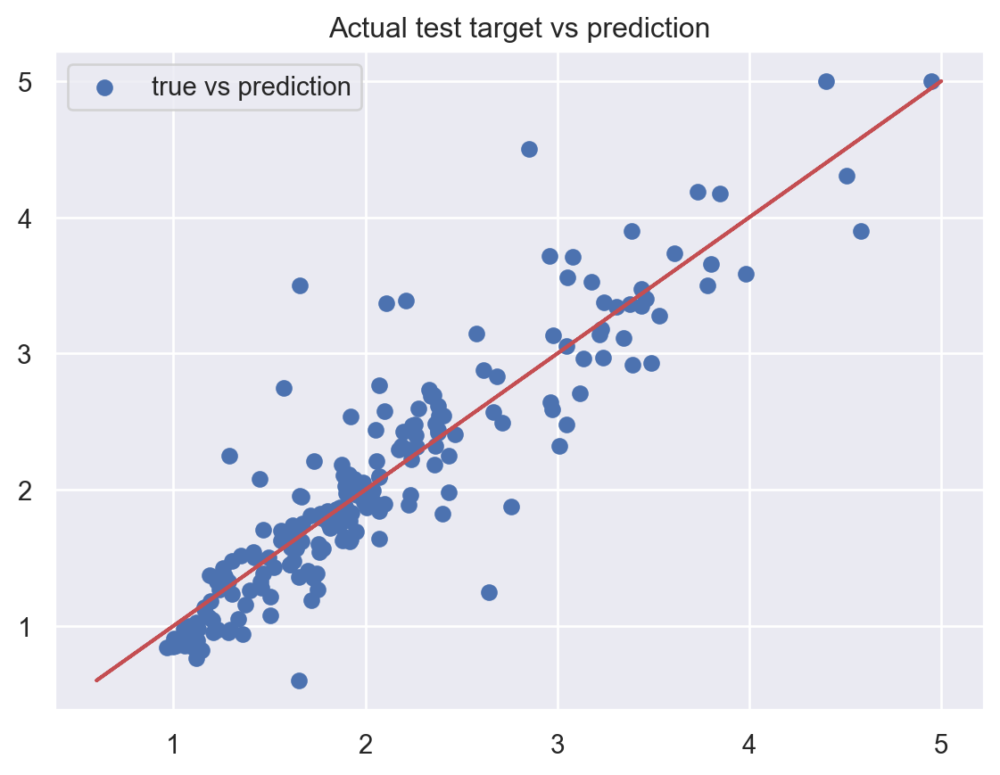
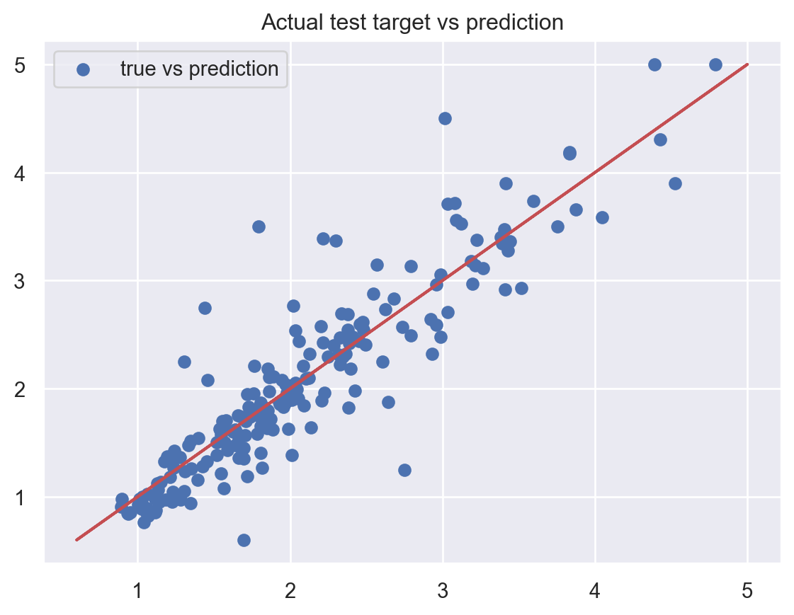

meta_params_cv = {
'ridge' : {'alpha' : 2 ** np.linspace(-10,10,100)},
'lasso' : {'alpha' : 2 ** np.linspace(-10,10,100)}
}Introduction to Super Learner method
Super Learner is a stack regression method that combines a given number of regressors based on their predicted features and cross-validation teachnique (M. J. Van der Laan, 2007). The method is summarized in the following figure.

Method summary
Several regressors are trained on cross-validation data to produce predictions on validation dataset. The validation predictions are stacked to form predicted features of the same size as the original training data.
This prediction data is used to train a set of meta learners. The best one among these meta learners is selected as the final learner using cross-validation method in step (5).
The final model or super learner is the selected meta learner built using the predicted features in the 6th step (the final basic regressors are built on the whole dataset).
SuperLearner method
class SuperLearner(random_state = None, base_learners = None, base_params = None, meta_learners = None, meta_params_cv = None, n_fold = int(10), cv_folds = None, loss_function = None, loss_weight = None):
Parameters
random_state: (default isNone) for setting the random state of the random generators in the class.base_learners: (default isNone) a list of candidate learners or estimators. If it isNone, intial learners including ‘linear_regression’, ‘ridge’, ‘lasso’, ‘knn’, ‘random_forest’ and ‘svm’ are used with default parameters. It should be a sublist of the following list: L = [‘linear_regression’, ‘knn’, ‘ridge’, ‘lasso’, ‘tree’, ‘random_forest’, ‘svm’, ‘sgd’, ‘bayesian_ridge’, ‘adaboost’, ‘gradient_boost’].base_params: (default isNone) a dictionary containing the parameters of the candidate learners given in thebase_learnersargument. It must be a dictionary with:key: the name of the base learners defined inbase_learners,value: a dictionary with (key, value) = (parameter, value).
meta_learners: (default isNoneand linear regression is used) meta learners that are trained on predicted features \((y_i, z_i)\) where \(z_i = (r_1(x_i), ..., r_M(x_i))\) of \(\mathbb{R}^M\) for \(i=1,...,n\). It is a model that takes predicted features given by all the candidate learners as inputs. It must be an element of the list L of all the base learners. If a list of predictors (subset of L) is given, then the best one will be selected using CV error defined bycv_folds.meta_params_cv: (default isNone) a dictionary withkeysbeing the name of the candidate meta learners given inmeta_learnersargument, and thevaluebeing the parameter dictionary. For example, if two meta learners are proposed inmeta_learners = ['ridge', 'lasso'], then this argument should be the following dictionary:
where in this case, the panalization strenght alpha = 2 ** np.linspace(-10,10,100) is to be tuned using cross validation technique.
cv_folds: (default isNone) a list or an arrayIof size \(n\) (observation size) whose elements are in \(\{0,1,...,K-1\}\). Then, \(I[i]=k\) if and only if observation \(i\) belongs to fold \(k\) in cross-validation procedure. IfNone, then the folds are selected randomly.loss_function: (default isNone) a function or string defining the cost function to be optimized for estimating the optimal bandwidth parameter. By defalut, the K-Fold cross-validation MSE is used. Otherwise, it must be either:- a function of two argumetns (y_true, y_pred) or
- a string element of the list [‘mse’, ‘mae’, ‘mape’, ‘weighted_mse’]. If it is
weighted_mse, one can define the weight for each training point usingloss_weightargument below.
loss_weight: (default isNone) a list of size equals to the size of the training data defining the weight for each individual data point in the loss function. If it is None and theloss_function = weighted_mse, then a normalized weight \(W(i) = 1/\text{PDF}(i)\) is assigned to individual i of the training data.
Returns:
self: returns an instance of self containing all the obtained results of the algorithm.
Methods:
fit: fitting the super learner on the design features (original data or predicted features). The argument of this method are described below.train_base_learners: build base learners on CV data. It is also possible to set the values of (hyper) parameters for each base learner inbase_params.add_extra_learners: to add additional learners to the list of base learner for training meta learner therefore build super learner. This can be class method or estimator, list, array or data frame of the same numer of rows as the training data.train_meta_learner: to train meta learner on (y_i z_i), CV predicted features. This method must be called if you add any axtra-learners to the list of base learner after callingfitmethod.draw_learning_curve: for plotting the graphic of learning algorithm (error vs parameter).
Installation of the library from pypi
gradientcobra can be installed from pypi using pip:
pip install gradientcobra
Importing some packages
# Metric of error
from sklearn.metrics import mean_squared_error, mean_absolute_error, mean_absolute_percentage_error
# Plotting figures
import matplotlib.pyplot as plt
from matplotlib import cm
# Import class SuperLearner from the superlearner module of gradientcobra library
from gradientcobra.superlearner import SuperLearner
import seaborn as sns
sns.set()Simulated data
We simulate a regression data with \(1000\) observations and \(10\) inputs variables.
# For simulating dataset
from sklearn.datasets import make_regression
X1, y1 = make_regression(n_samples=1000, n_features=10, noise=5)Now, let’s randoly split the simulated data into \(80\%-20\%\) training-testing data.
from sklearn.model_selection import train_test_split
X_train1, X_test1, y_train1, y_test1 = train_test_split(X1, y1, test_size=0.2)
print('shape: x_train = {} , x_train = {} , y_train = {} , y_test = {}'.format(
X_train1.shape,
X_test1.shape,
y_train1.shape,
y_test1.shape))shape: x_train = (800, 10) , x_train = (200, 10) , y_train = (800,) , y_test = (200,)\(\bullet\) SuperLearner with default parameters
When fitting
SuperLearner, you have full control over how the training process should proceed by using the following arguments:
X, y: the training input and output. If the argumentas_predictions = True, then the inputXis treated as predicted featuresZ. In this case, the meta learner is trained directly on \((X,y)\) without building any base learners.train_meta_learners: a boolean variable controlling whether to directly train the meta learner or not after training the base learners given inbase_learnersargument. This is useful when you want to add extra learners to the list of base learners before training the meta learner.as_predictions: a boolean variable controlling whetherXshould be treated as predicted featuresZor not. If it isTrue, then meta learners will be trained directly on \((X,y)\).
You can perform CV over a list of meta learner of
meta_learnersargument by providing their corresponding dictionaries of parameters inmeta_paramsarguement. Moreover, you can also add features that were obtained from anonymous models by specifying in thefitmethod usingtrain_meta_learners = False. In this case, thefitmethod only trains the base learners and provides predicted features \((Z_i)\) for meta learners. After that, you can useadd_extra_learnersmethod to add extra learners to the list of base learners. These extra learners can be anysklearnclasses, orpandas data frame,numpy arraysorlistcontaining the same number of observations as the training data. If the data frame (nonsklearnmodule) are added as additional learners, then it will be concatenated to the predicted features \((Z_i)\) for training meta models. It is important to notice that if extra features are added as extra learners, their corresponding extra features of the testing data must also be provided.
This will be illustrated on real data section.
We create SuperLearner object called gc1, with the default parameters, then fit it to the training data.
sl1 = SuperLearner()
sl1_fit = sl1.fit(X_train1, y_train1)By default, the predicted features are aggregated using linear form. Let’s look at the performance of the trained Super learner.
# MixCOBRA with default parameter
sl1_pred = sl1_fit.predict(X_test1)
print(f"Test MSE: {mean_squared_error(y_test1, sl1_pred)}")
print(f"Test MAPE: {mean_absolute_percentage_error(sl1_pred, y_test1)}")
plt.scatter(sl1_pred, y_test1, label="true vs prediction")
plt.plot(y_test1, y_test1, c="r")
plt.title("Actual test target vs prediction")
plt.legend()
plt.show()Test MSE: 28.4724834505022
Test MAPE: 0.09780957598142677
It performs really well on this simulated data.
\(\bullet\) SuperLearner with non-default parameters
One can set non-default parameters to base learners in SuperLearner object to enhance its performance. We create another object sl2 with non-default parameters, then fit it to the same training data as in the previous example. W
sl2 = SuperLearner(
base_learners=['linear_regression', 'ridge', 'lasso'],
meta_learners=['knn', 'ridge', 'linear_regression','random_forest', 'adaboost'],
meta_params_cv={'adaboost' : {
'n_estimators' : [100, 50],
'max_depth' : [10, 5]
},
'ridge' : {
'alpha' : [ 2 ** i for i in range(-10,10)]
},
'random_forest' : {
'n_estimators' : [100, 50],
'min_samples_leaf' : [10, 5]
},
'knn' : {'n_neighbors' : [3,5,10,15,20]}
}
)
sl2_fit = sl2.fit(X_train1, y_train1)Now, let’s see which meta learner is the selected one.
sl2_fit.draw_learning_curve()
print(f'The selected meta learner is {sl2_fit.SuperLearner}')The selected meta learner is Ridge(alpha=512)We evaluate the performance of the method on the testing data using MSE and MAPE.
sl2_pred = sl2_fit.predict(X_test1)
print(f"Test MSE: {mean_squared_error(y_test1, sl2_pred)}")
print(f"Test MAPE: {mean_absolute_percentage_error(sl2_pred, y_test1)}")
plt.scatter(sl2_pred, y_test1, label="true vs prediction")
plt.plot(y_test1, y_test1, c="r")
plt.title("Actual test target vs prediction")
plt.legend()
plt.show()Test MSE: 28.39923486905964
Test MAPE: 0.09725609616567316
It’s as good as the previous one!
Real dataset
We look at the California housing dataset from sklearn.datasets module. To illustrate the idea, we only work with the first \(1000\) observations.
from sklearn.datasets import fetch_california_housing
data = fetch_california_housing()
X_real, y_real = data['data'], data['target']
X_train_real, X_test_real, y_train_real, y_test_real = train_test_split(X_real[:1000,:], y_real[:1000], test_size=0.2)
print('shape: x_train = {} , x_train = {} , y_train = {} , y_test = {}'.format(X_train_real.shape, X_test_real.shape, y_train_real.shape, y_test_real.shape))shape: x_train = (800, 8) , x_train = (200, 8) , y_train = (800,) , y_test = (200,)We set some random parameters in SuperLearner. We train the base learners on cross validation data but do not train meta learners directly.
sl3 = SuperLearner(base_learners=['linear_regression', 'ridge', 'lasso'],
meta_learners=['knn', 'ridge', 'linear_regression','random_forest', 'adaboost'],
meta_params_cv={'adaboost' : {
'n_estimators' : [100, 300],
'max_depth' : [10, 5]
},
'ridge' : {
'alpha' : [ 2 ** i for i in range(-10,10)]
},
'random_forest' : {
'n_estimators' : [100, 300],
'min_samples_leaf' : [10, 5]
},
'knn' : {'n_neighbors' : [3,5,10,15,20]}})
sl3_fit = sl3.fit(
X_train_real,
y_train_real,
train_meta_learners=False)\(\bullet\) Add sklearn module as extra learners
The base learners are loaded and trained, but the meta learner (candidate of super learner) has not been trained on the predicted features of the trained base learners yet. This allows us to add extra base learners. We will add random forest and adaboost as extra learners.
from sklearn.ensemble import RandomForestRegressor, AdaBoostRegressor
sl3_fit = sl3_fit.add_extra_learners(extra_learner=RandomForestRegressor())
sl3_fit = sl3_fit.add_extra_learners(extra_learner=AdaBoostRegressor())When all the base learners are added, we can train them as well as fitting the meta learners as follow.
sl3_fit.train_meta_learners()SuperLearner(base_learners=['linear_regression', 'ridge', 'lasso'],
meta_learners=['knn', 'ridge', 'linear_regression',
'random_forest', 'adaboost'],
meta_params_cv={'adaboost': {'max_depth': [10, 5],
'n_estimators': [100, 300]},
'knn': {'n_neighbors': [3, 5, 10, 15, 20]},
'random_forest': {'min_samples_leaf': [10, 5],
'n_estimators': [100, 300]},
'ridge': {'alpha': [0.0009765625, 0.001953125,
0.00390625, 0.0078125,
0.015625, 0.03125, 0.0625,
0.125, 0.25, 0.5, 1, 2, 4, 8,
16, 32, 64, 128, 256, 512]}})In a Jupyter environment, please rerun this cell to show the HTML representation or trust the notebook. On GitHub, the HTML representation is unable to render, please try loading this page with nbviewer.org.
SuperLearner(base_learners=['linear_regression', 'ridge', 'lasso'],
meta_learners=['knn', 'ridge', 'linear_regression',
'random_forest', 'adaboost'],
meta_params_cv={'adaboost': {'max_depth': [10, 5],
'n_estimators': [100, 300]},
'knn': {'n_neighbors': [3, 5, 10, 15, 20]},
'random_forest': {'min_samples_leaf': [10, 5],
'n_estimators': [100, 300]},
'ridge': {'alpha': [0.0009765625, 0.001953125,
0.00390625, 0.0078125,
0.015625, 0.03125, 0.0625,
0.125, 0.25, 0.5, 1, 2, 4, 8,
16, 32, 64, 128, 256, 512]}})Once the tarining is done, we can check the best meta learner.
sl3_fit.draw_learning_curve()
print(f'The selected meta learner is {sl3_fit.SuperLearner}')The selected meta learner is LinearRegression()We evaluate the performance of the method on the testing data using MSE and MAPE.
sl3_pred = sl3_fit.predict(X_test_real)
print(f"Test MSE: {mean_squared_error(y_test_real, sl3_pred)}")
print(f"Test MAPE: {mean_absolute_percentage_error(sl3_pred, y_test_real)}")
plt.scatter(sl3_pred, y_test_real, label="true vs prediction")
plt.plot(y_test_real, y_test_real, c="r")
plt.title("Actual test target vs prediction")
plt.legend()
plt.show()Test MSE: 0.14331252970635305
Test MAPE: 0.1299550873927248
\(\bullet\) Add anonymous predicted features as extra learners
In practice, one may wish to aggregate the trained modules with some predicted features from anonymous models. Let’s build any SuperLearner object called sl4 then add both types of extra learners: sklearn module (random forest and adaboost) and predicted features (SVM and KNN) as extra base learners.
sl4 = SuperLearner(base_learners=['ridge', 'lasso'],
base_params={
'ridge' : {'alpha' : 0.3},
'lasso' : {'alpha' : 0.5}
},
meta_learners=['knn', 'ridge', 'linear_regression','random_forest', 'adaboost'],
meta_params_cv={'adaboost' : {
'n_estimators' : [100, 50],
'max_depth' : [10, 5]
},
'ridge' : {
'alpha' : [ 2 ** i for i in range(-10,10)]
},
'random_forest' : {
'n_estimators' : [100, 50],
'min_samples_leaf' : [10, 5]
},
'knn' : {'n_neighbors' : [3,5,10,15,20]}})
sl4_fit = sl4.fit(
X_train_real,
y_train_real,
train_meta_learners=False)
# Add sklearn module extra learners
sl4_fit = sl4_fit.add_extra_learners(extra_learner=RandomForestRegressor())
sl4_fit = sl4_fit.add_extra_learners(extra_learner=AdaBoostRegressor())We need to add extra features that correspond to the validation folds. To correctly train the new features, we can use sl4_fit.cv_folds_ which contains the indices of the folds of the object.
from sklearn.svm import SVR
from sklearn.neighbors import KNeighborsRegressor
import numpy as np
ex1 = SVR()
ex2 = KNeighborsRegressor()
add_features = np.zeros(shape=(len(y_train_real), 2))
for i in range(sl4_fit.n_fold):
f1 = ex1.fit(X_train_real[sl4_fit.cv_folds_ != i, :], y_train_real[sl4_fit.cv_folds_ != i].reshape(-1))
add_features[sl4_fit.cv_folds_ == i,0] = f1.predict(X_train_real[sl4_fit.cv_folds_ == i, :])
f2 = ex2.fit(X_train_real[sl4_fit.cv_folds_ != i, :], y_train_real[sl4_fit.cv_folds_ != i].reshape(-1))
add_features[sl4_fit.cv_folds_ == i,1] = f2.predict(X_train_real[sl4_fit.cv_folds_ == i, :])
# Add the predicted features to the object 'sl4_fit'
sl4_fit = sl4_fit.add_extra_learners(extra_learner=add_features)Let’s see how many times did we add extra features and extra learners?
print(f"Number of extra learners: {sl4_fit.n_extra_learners}")
print(f"Number of extra features: {sum([sl4_fit.extra_features[i].shape[1] for i in range(1, sl4_fit.n_extra_features+1)])}")Number of extra learners: 2
Number of extra features: 2Let’s learn the best meta learner.
sl4_fit.train_meta_learners()SuperLearner(base_learners=['ridge', 'lasso'],
base_params={'lasso': {'alpha': 0.5}, 'ridge': {'alpha': 0.3}},
meta_learners=['knn', 'ridge', 'linear_regression',
'random_forest', 'adaboost'],
meta_params_cv={'adaboost': {'max_depth': [10, 5],
'n_estimators': [100, 50]},
'knn': {'n_neighbors': [3, 5, 10, 15, 20]},
'random_forest': {'min_samples_leaf': [10, 5],
'n_estimators': [100, 50]},
'ridge': {'alpha': [0.0009765625, 0.001953125,
0.00390625, 0.0078125,
0.015625, 0.03125, 0.0625,
0.125, 0.25, 0.5, 1, 2, 4, 8,
16, 32, 64, 128, 256, 512]}})In a Jupyter environment, please rerun this cell to show the HTML representation or trust the notebook. On GitHub, the HTML representation is unable to render, please try loading this page with nbviewer.org.
SuperLearner(base_learners=['ridge', 'lasso'],
base_params={'lasso': {'alpha': 0.5}, 'ridge': {'alpha': 0.3}},
meta_learners=['knn', 'ridge', 'linear_regression',
'random_forest', 'adaboost'],
meta_params_cv={'adaboost': {'max_depth': [10, 5],
'n_estimators': [100, 50]},
'knn': {'n_neighbors': [3, 5, 10, 15, 20]},
'random_forest': {'min_samples_leaf': [10, 5],
'n_estimators': [100, 50]},
'ridge': {'alpha': [0.0009765625, 0.001953125,
0.00390625, 0.0078125,
0.015625, 0.03125, 0.0625,
0.125, 0.25, 0.5, 1, 2, 4, 8,
16, 32, 64, 128, 256, 512]}})The best meta learner:
sl4_fit.draw_learning_curve()
print(f'The selected meta learner is {sl4_fit.SuperLearner}')The selected meta learner is LinearRegression()We evaluate the performance of the method on the testing data using MSE and MAPE.
As we provided the predicted features of
SVRandKNNas extra features, we have to provide predicted features of the testing data when callingpredictmethod.
test_features = np.column_stack([
ex1.predict(X_test_real),
ex2.predict(X_test_real)
])
sl4_pred2 = sl4_fit.predict(X_test_real, extra_features=test_features)
print(f"Test MSE: {mean_squared_error(y_test_real, sl4_pred2)}")
print(f"Test MAPE: {mean_absolute_percentage_error(sl4_pred2, y_test_real)}")
plt.scatter(sl4_pred2, y_test_real, label="true vs prediction")
plt.plot(y_test_real, y_test_real, c="r")
plt.title("Actual test target vs prediction")
plt.legend()
plt.show()Test MSE: 0.13462535719310822
Test MAPE: 0.12143543310128489